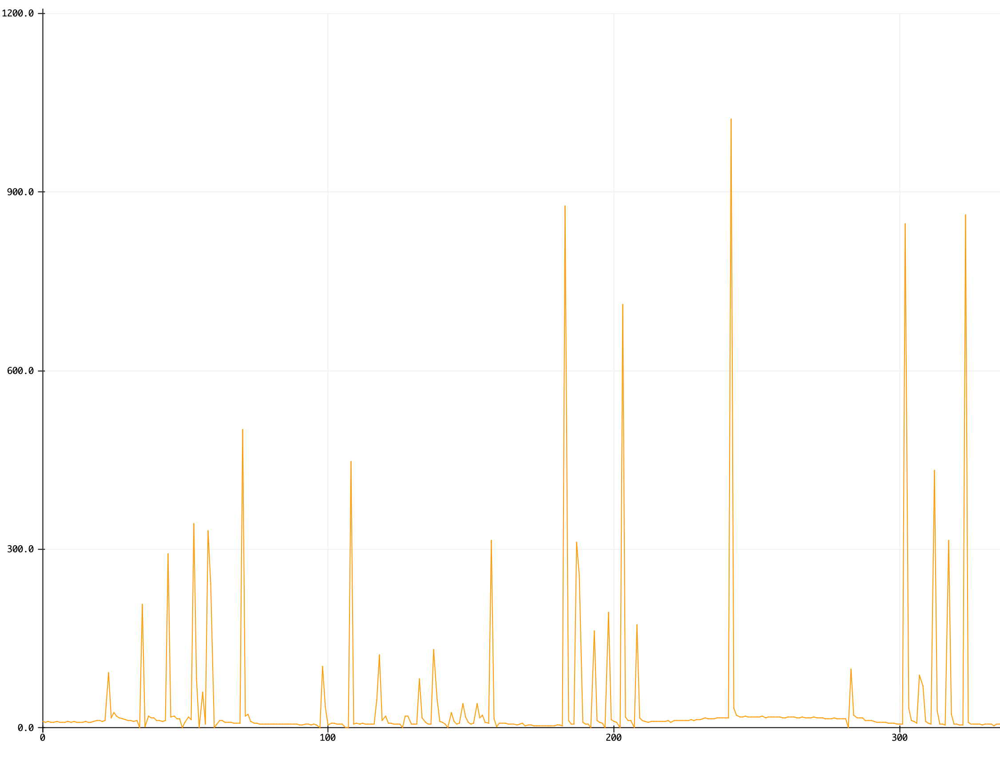

This week we looked at various types of electronic input devices/sensors. In my homework, I decided, in
addition to the capacitive sensing, that I would work with the piezoelectric voltage generating sensor
since I'd previously worked with phototransistors in a voltage-divider circuit.
For the capacitive sensing portion, I focused on creating a force sensor via a parallel plate capacitor.
I tested the parallel plates with just air between them and then with a mousepad.
I noticed that with the mousepad in between the plates, the voltage transferred between them was significantly reduced
even when maximum force is applied. After doing some more research online on what the math was behind this result,
I found a very helpful
website
explaining capacitors and dielectrics in even more detail and also talked about dielectric constants of various materials.
The fact that the max voltage transfer with the mousepad was around 450 rather than 1023 is because the mousepad's material
has a higher dielectric strength than air, meaning that it can be subjected to much higher voltage
before it begins to break down and conduct. Thus, certain materials with a higher constant can be used to tune a force sensor within
a smaller range of values. I also tested this with a piece of paper in between to verify that as expected, the dielectric strength of paper was less than
that of the mousepad but more than that of air, since the readings were around ~800.
Next, I decided to use the piezo sensor to create a tap metronome.
Here is the circuitry:
By identifying the voltage produced at a suitable peak (anything above 80/1023), I could then
identify the timings between peaks and use that to estimate the beats per minute (BPM) that the force is
coming in at.
Here is a graph of the force coming in over the serial plotter:

Since I realized from experience and testing that I didn't want this value to range too widely, I
took an average over the last 3 readings. By comparing it to an online tap metronome, I saw that
I was getting quite consistent results, outside of some noisy data.
int analogPin = 0;
unsigned long myTime;
int intervals[5]={0,0,0,0,0};
void setup(void) {
Serial.begin(9600); // We'll send debugging information via the Serial monitor
myTime = millis();
// pinMode(LEDpin, OUTPUT);
}
void loop(void) {
int reading = analogRead(analogPin);
// Serial.print("Analog reading = ");
// Serial.println(reading);
if (reading > 100){
int curTime = millis();
int timeDiff = curTime - myTime;
myTime = curTime;
intervals[0] = intervals[1];
intervals[1] = intervals[2];
intervals[2] = timeDiff;
float avgTime = 0;
for(byte i = 0; i < 3; i++)
{
avgTime = avgTime + intervals[0];
}
avgTime = avgTime / 3;
// Serial.print("avgtime = ");
// Serial.println(avgTime);
float bpm = 60000/avgTime;
Serial.print("BPM = ");
Serial.println(bpm);
}
delay(100);
}